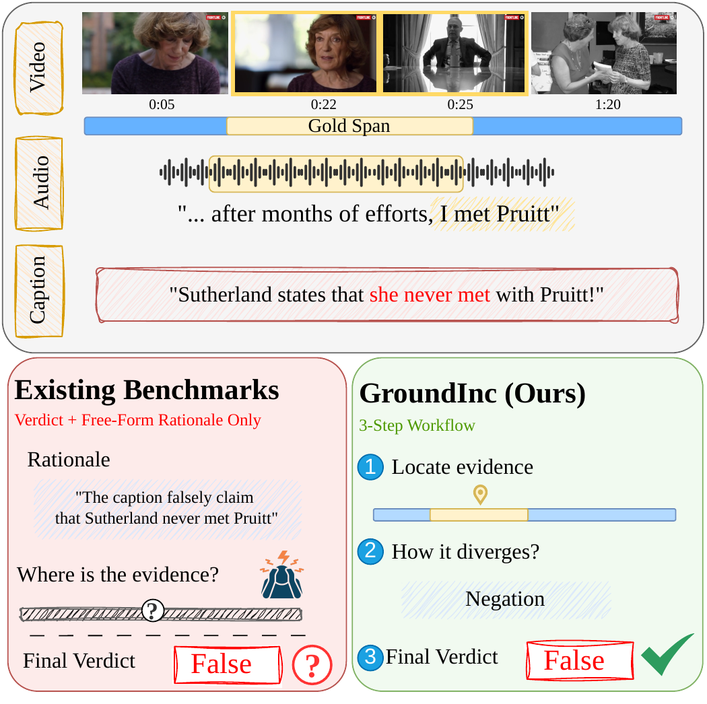
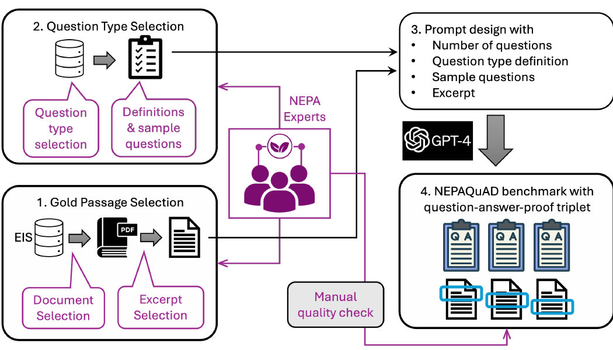

Publications
My work spans video-language understanding, retrieval over long documents, scientific language models, and crisis informatics. For the complete record, visit Google Scholar ↗.
Selected work

Under review · ARR
GroundInc
Video-caption verification that tests whether decisions are supported by the relevant moments in a video.
Publication details ↓
KDD SciSoc · 2025
NEPAQuAD & MAPLE
A benchmark and study of retrieval and long context for environmental-review documents.
Read paper ↗All publications
Manuscript under review
GroundInc: Grounding Inconsistencies for Video Caption Verification
Shivam Sharma, Y. Kementchedjhieva, I. Gurevych · Under review at ARR
2025
Benchmarking LLMs for Environmental Review and Permitting ↗
R. Meyur, H. Phan, K. Hayashi, I. Stewart, Shivam Sharma, et al. · SciSoc LLM Workshop at KDD
2024
Exploring the Benefits of Domain-Pretraining of Generative Large Language Models for Chemistry ↗
A. Acharya, Shivam Sharma, R. Cosbey, M. Subramanian, S. Howland, M. Glenski · arXiv
2022
Foundation Models of Scientific Knowledge for Chemistry: Opportunities, Challenges and Lessons Learned ↗
S. Horawalavithana, E. Ayton, Shivam Sharma, et al. · BigScience Workshop
EXPERT: Public Benchmarks for Dynamic Heterogeneous Academic Graphs ↗
S. Horawalavithana, E. Ayton, A. Usenko, Shivam Sharma, et al. · GLB at WWW
Bang for Your Buck: Performance Impact Across Choices in Learning Architectures for Crisis Informatics ↗
Shivam Sharma, C. Buntain · ISCRAM
2021
Evaluating and Explaining Natural Language Generation with GenX ↗
K. Duskin, Shivam Sharma, J. Yun, E. Saldanha, D. Arendt · DaSH Workshop
An Evaluation of Twitter Datasets from Non-Pandemic Crises Applied to Regional COVID-19 Contexts ↗
Shivam Sharma, C. Buntain · ISCRAM
Method Comparison for Crisis Pipelines ↗
Shivam Sharma, C. Buntain · TREC-IS
2020
Improving Classification of Crisis-Related Social Media Content via Text Augmentation and Image Analysis ↗
Shivam Sharma, C. Buntain · TREC-IS
2018
Combining Neural, Statistical and External Features for Fake News Stance Identification ↗
G. Bhatt, A. Sharma, Shivam Sharma, A. Nagpal, B. Raman, A. Mittal · MSM